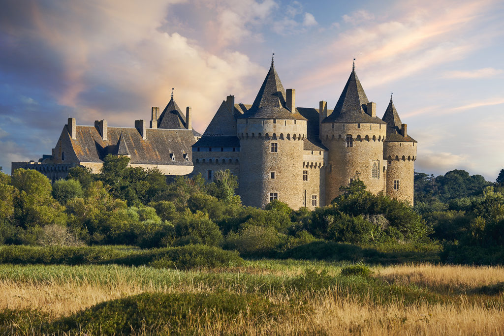
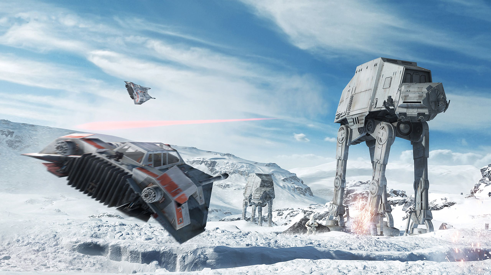
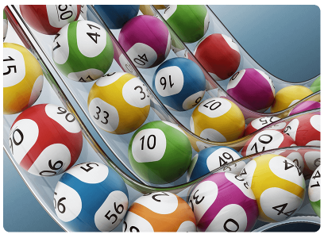
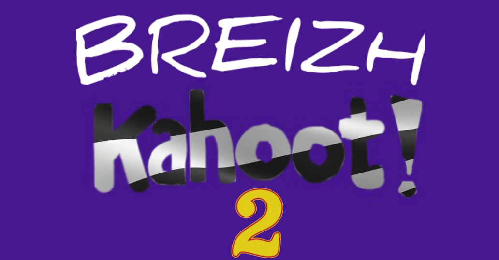
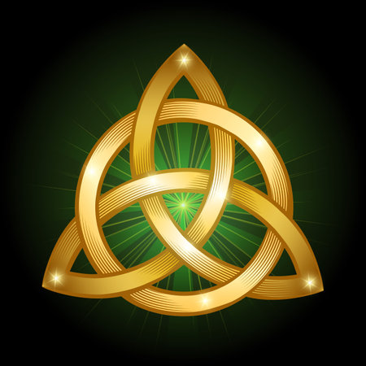

Tournois 🏟
Tournois
Les Tournois de l'Empire Breton, disponibles sur le serveur discord dans le salon #🏟-tournois  , s'organisent généralement en 3 phases. Sur 8 participants de bases, sont organisés des Quarts, Demis et Finales. Les thèmes de ces tournois sont toujours autour de la Bretagne. Les membres peuvent donc voter pour leur préféré dans les couples proposés et peuvent changer leurs votes jusqu'à la fin de la phase. A la fin d'un tournoi, le podium réalisé à partir des résultats de la finale et de la finale des perdants est publié. Vous êtes tout à fait libres de suggérer un ou plusieurs tournois. , s'organisent généralement en 3 phases. Sur 8 participants de bases, sont organisés des Quarts, Demis et Finales. Les thèmes de ces tournois sont toujours autour de la Bretagne. Les membres peuvent donc voter pour leur préféré dans les couples proposés et peuvent changer leurs votes jusqu'à la fin de la phase. A la fin d'un tournoi, le podium réalisé à partir des résultats de la finale et de la finale des perdants est publié. Vous êtes tout à fait libres de suggérer un ou plusieurs tournois.
|
Sondages 📊
Sondages
Les Sondages de l'Empire Breton, disponibles sur le serveur discord dans le salon #📊-sondages , s'organisent indépendament les un des autres. Des sondages numérotés avec des chiffres romains sont publiés occasionnelement sur le thème de la Bretagne et de l'Interceltique pour vour demander votre avis sur des élements de la culture bretonne ou celtique, ou sur des opinions politiques simples toujours en rapport avec les celtes comme par exemple l'Indépendance de l'Écosse ou les Réunifications territoriales Bretonnes ou Irlandaises.
|
Quiz 🎯
Quiz
Les Quiz de l'Empire Breton, disponibles sur le serveur discord dans le salon #🎯-quiz , s'organisent sous la forme des Questions/Réponses. Les Quiz numérotés avec des chiffres romains sont publiés régulièrement toujours sur le thème de la Bretagne ou des Nations Celtiques. Quand un quiz est publié, le lendemain généralement, la réponse est à son tour publiée. Quand elle n'est pas publiée le lendemain, elle le sera normalement peu de temps après. Les Quiz sont disponibles en version bilingue (fr/br).Quand une réponse est pubiée*, des explications sont jointes à la solution. Une image différente de celle de la question peut être potentielement jointe si elle est utile à l'explication, sinon sera utilisée pour la réponse la même image que celle utilisée pour la question.

|
Quiz Star Wars 🎯
QuizSW
Les Quiz de l'Empire Breton, disponibles sur le serveur discord dans le salon #🎯-quiz-sw , s'organisent exactement sous le même format que les Quiz normaux. Cependant, ils sont sur le thème de Star Wars, et accessibles dans la catégorie Star Wars avec le rôle @Star Wars. Ils couvrent l'univers officiel Star Wars ainsi que l'univers Légendes. La régularité des Quiz Star Wars est plus faible que pour les Quiz normaux. Le salon ayant moins d'accessibilité et moins de membres potentielement intéressés par l'Univers Star Wars. Les Quiz Star Wars ne sont pas disponibles en breton, contrairement aux Quiz classiques sur la Bretagne et les Nations Celtiques. En raison de l'abscence de retours sur la catégorie star wars, nous serions heureux que vous nous donniez vos avis.

|
Giveaway 🎉
Giveaway
Les Giveaways de l'Empire Breton, disponibles sur le serveur discord dans le salon #🎉-giveaway , s'organisent en deux étapes, tout d'abord, la phase d'inscription, où il faut cliquer sur un bouton pour s'inscrire, et dans un second temps les résultats plus tard. Le gagnant ou les gagnants sont tirés au sort aléatoirement par le Bot. Les récompenses varient selon le Giveaway en cours. Les Giveaway se font rarement, environ une fois par mois. NB : Certains sondages peuvent nécessiter un ticket pour participer. Ils sont disponibles dans la boutique avec la commande /boutique alias /shop. Les Giveaways sont numérotés par des chiffres romains. Les récompenses les plus courantes sont des rôles, des objets ou de l'argent du serveur.

|
Évènements 🎁
Evenement
Les Évènements de l'Empire Breton, disponibles sur le serveur discord dans le salon #🎁-évènements , s'organisent différemment selon les events, pour plus de détails, regardez la page web ci-dessus. Certains évènements peuvent se dérouler dans le serveur, comme les Évènements Noël, Halloween ou Épidémie entre autres, ou en dehors du Serveur comme les Évènements Breizh Kahoot 1 et 2. Des soirées jeux sont desfois organisées par Yukilo, plus régulières que les Évènements normaux, elles sont généralement en vocal pour des jeux divers d'humour comme Limit Limit, Make it Meme ou Gartic Phone par exemple.

|
Le Saviez-Vous 🎀
LeSaviezVous
Les "Le Saviez-Vous ?" sont une semi-animation de l'Empire Breton, disponibles sur le serveur discord dans le salon #🎀-le-saviez-vous , sont une semi-animation non-gérée par le Staff, ces animations ont été demandées et crées par des membres initialement non-staff, qui ont pour but de partager des petites ou grandes informations diverses plus ou moins évidentes sur le thème de la Bretagne ou des Nations Celtiques. Comme son nom l'indique, on donne le défi au membre de voir si ils connaissaient assez bien la culture britto-celtique ou dans le cas contraire, leur apprendre quelque chose et enrichir leur culture général. Étant une animation non-gérée par le Staff, n'importe quel membre, sans distinction de Niveau, peut y publier autant de "Le Saviez-vous ?" qu'il souhaite. Nous vous conseillons cependant de ne pas dépasser les 5 messages par jour dans ce salon pour qu'un maximum de gens lisent vos messages et ne soient pas découragés par le surplus de lecture.

|
 Menu Animation
Menu Animation